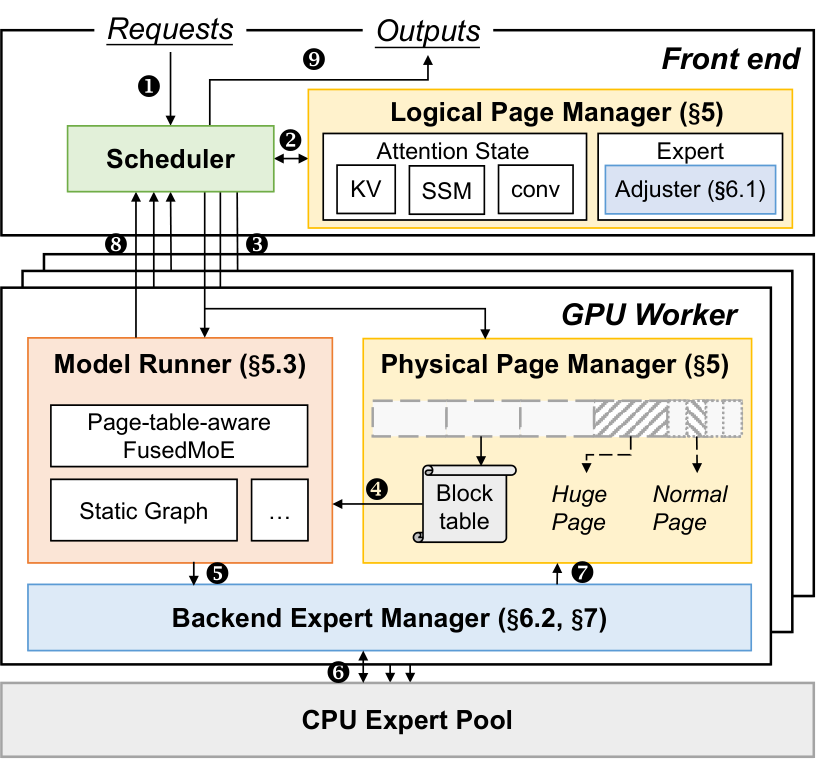
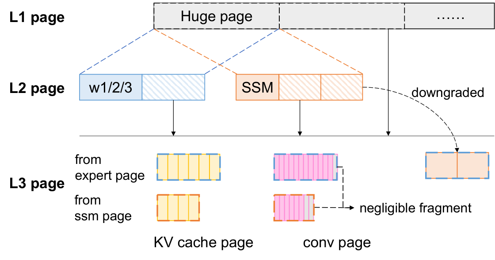
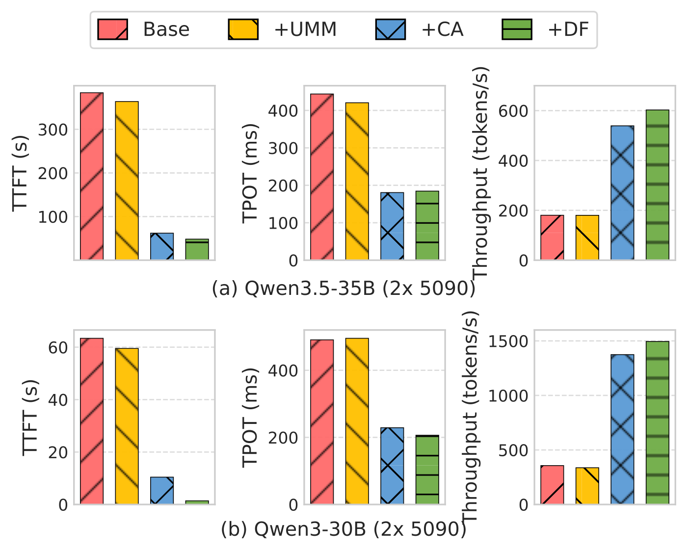
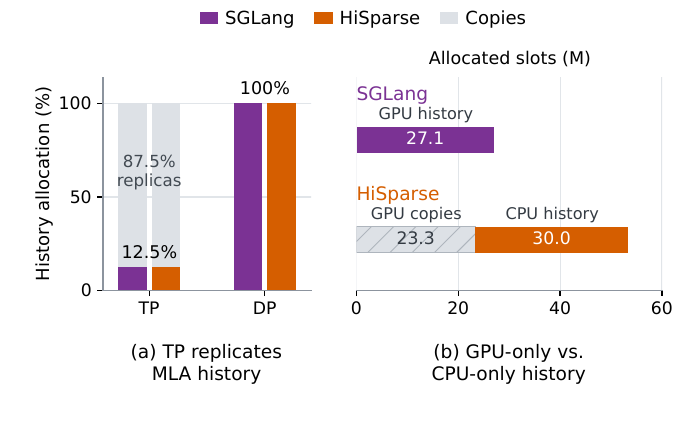

目录 · 9 节
1它到底在解决什么问题？2整体流程：一轮调度里发生了什么3一池显存，怎么让大小差几个数量级的数据共用？4专家权重散在各页里，计算核怎么读？5调整器：什么时候踢专家，踢哪个？6实验：快在哪里，代价在哪里7我认为它的局限8一个推理部署团队可以怎么试9结论把 MoE 模型的专家权重和 KV cache 放进同一池显存，按负载随时调整两边各占多少，显存有限的机器就能接住更多并发请求。Rimuru 就是这样的推理系统：请求多时把用得少的专家移出显存，给 KV cache 腾出页，请求少时再把专家搬回来。为此它改写了 MoE 计算核，直接读取不连续存放的专家权重。现有的专家卸载系统在启动时就把显存切成固定的两块，请求一多 KV cache 就不够用。在显存刚好放得下全部权重的 5090 机器上，Rimuru 主动移出一部分专家来接更多请求，吞吐是权重全放显存的 vLLM 和 SGLang 的 1.1 到 2.88 倍。
做大模型推理部署的团队值得读，尤其是要在几张消费级显卡或老服务器上跑 MoE 的团队。它没有再造一个更准的专家预测器，而是把“显存里留多少专家”从启动时定死的配置变成了运行时跟着排队请求变的量。核心思想一句话：专家权重和 KV cache 共用一池页，每一轮调度后，调整器看 KV cache 还缺多少页，缺就按热度从冷到热踢专家，富余就按热度从热到冷补专家。同一个模型、同一张 5090、同一串请求下，峰值并发从固定比例卸载的 74 个提到 90 个，跑完整批请求要的前向步数从约 1300 降到约 1000（比的是步数，不是耗时）。
它到底在解决什么问题？
先用一个示意场景把显存分界固定带来的问题讲清楚。一个团队在两张 24 GB 显卡上部署一个 30B 级的 MoE 模型，权重放不下，于是按常见做法只在显存里留一部分专家，其余放在 CPU 内存里，用到时经 PCIe 搬上来。剩下的显存划给 KV cache。这条分界线在启动时就定了。
| 时段（示意） | 排队请求 | KV cache 区 | 专家区 | 结果 |
|---|---|---|---|---|
| 白天高峰 | 很多 | 满了 | 留着一批这会儿很少被路由到的专家 | 新请求只能排队，首 token 延迟飙升 |
| 深夜低谷 | 很少 | 大半空着 | 已满，放不下更多专家 | 每层都在从内存搬专家，生成变慢 |
问题不在于专家留多了还是留少了，而在于两块显存的分界线固定，而两种数据的需求此消彼长。论文用一个真实实验量化了这件事：在一张 RTX 5090 上跑 Qwen1.5-MoE-14B，同一串 ShareGPT 请求（每秒 10 个），比较三种做法。权重全放显存的 vLLM 峰值只有 34 个并发请求，跑完要约 2100 个前向步；固定比例卸载专家后，KV cache 区变大，峰值并发到 74，约 1300 步；Rimuru 让分界线随负载移动，峰值并发 90，约 1000 步。这说明卸载专家只是“腾出了显存”，而让腾出的显存在两类数据之间来回借用，还能再少约 300 个前向步。

整体流程：一轮调度里发生了什么
Rimuru 建在 vLLM 上，约 4400 行 Python 加 800 行 C++，MoE 计算核用 Triton 写。下图是整体结构，按编号读一轮调度：

- 请求进入调度器的队列。
- 逻辑页管理器给这一轮要跑的请求分配 KV cache 页；排程如果还差页，差额交给调整器去踢专家。调整器（论文叫 adjuster）根据剩余页数，决定专家缓存这一轮是扩、是缩还是不动。
- 调度结果、页分配和“哪些专家要搬进、哪些要踢出”的变更单一起发给 GPU。
- GPU 侧更新页表，模型执行时按页表找到 KV cache 和专家权重。
- 后端专家管理器把要新缓存的专家和预测要用到的专家合并成一个预取队列，从 CPU 内存搬上来。预测部分直接沿用已有卸载系统 Fate 的专家预测，不是本文的贡献；论文没说这个预测器具体读哪一层的什么数据来预测后续层的专家。真正计算时以实际路由为准，没提前搬上来的专家在计算前现搬。
关键分工是：前端只决定显存怎么分，GPU 侧负责把搬运和页表更新安排在安全的时机。下面分三块讲：一池显存怎么让大小不同的数据共用，散落的专家权重怎么直接参与计算，以及调整器怎么决定扩缩。
一池显存，怎么让大小差几个数量级的数据共用？
为什么这一步难：一个专家的一块权重矩阵是几 MB 级的整块，而 KV cache 按 vLLM 的做法每页只存 16 个 token 的 K 和 V。全按小页管，专家要拆成大量小页，查表开销大；全按大页管，KV cache 的小请求会浪费大量空间。
Rimuru 的做法分两层。第一层是“视图”（论文叫 memory view）：整个页池在显存里是一段连续字节，专家、KV cache、Mamba 层的 SSM 状态和卷积状态各有一个视图，各自按自己的页大小和形状去解读同一段字节，用的是 PyTorch 的 .view(dtype) 和 .view(shape)，不复制数据。一块显存被专家用完、安全回收后，可以马上被 KV cache 的视图拿去用。
第二层是三级分页。最大的一级叫大页，大小取专家页和 SSM 页大小的最小公倍数，模型没有 SSM 时就等于专家页大小；中间一级是专家页和 SSM 页；最小一级是 KV cache 页和卷积状态页，要求能整除大页。分配时按需往下切：KV cache 要页，先用已经切好的空闲小页，不够就切一个空闲的专家页，再不够才把一个大页切成专家页。它不直接把大页切成 KV 小页，因为大小差太多，容易把大页切得零零碎碎。回收是反过来：一个专家页上的 KV 小页全部释放后，整页恢复成专家页；一个大页下的所有页都回来后，大页回到总池。

举个手算的小例子（示意）：一个专家页上切出了 KV 小页，分给了三个请求。前两个请求结束，这个专家页还不能还；第三个请求结束后，整页合并回专家页，才能拿去放一块被搬回来的专家权重矩阵（一个专家的三块矩阵各占一页）。所以 Rimuru 尽量把同一个专家页切出来的小页分给同一个请求，让它们一起释放。这个例子里，前两个请求结束后空出的小页只能继续给 KV cache 用，放不了专家，这是一种暂时的受困空间，同请求分配就是为了缩短它。除此之外，论文认为剩下的浪费只有两种：KV 页没写满的部分，以及卷积状态末尾用不满的空间。每一处都小于一个小页，而这两种页本来就很小，所以论文判断总量可以忽略。
专家权重散在各页里，计算核怎么读？
为什么需要改计算核：vLLM 原来的 fused MoE 计算核要求所有专家的权重按顺序紧挨着放在一个大数组里。现在缓存在显存里的专家散落在页池的不同位置，没缓存的专家临时搬进一块加载缓冲区。如果每次计算前把它们拷成一个连续数组，就多了一轮显存内拷贝，还要额外的暂存空间，缓存省下的东西又吐回去了。
Rimuru 的计算核多收一份“专家在哪”的元数据：缓存着的专家给页号，临时搬来的专家给缓冲区位置。一个专家的门控和上投影两块矩阵（论文记作 、）分别占一页，计算时按输出列落在前一半还是后一半，去对应的那一页取权重，不用真的拼起来。地址公式是：
这里 是页池起点， 是专家 第 个输出列所在的页号，、 是这张卡上的中间维和隐藏维， 是沿隐藏维的偏移。直觉是：查页号这件事每算一块输出只做一次，之后在页内按固定步长往下读，所以多出来的寻址开销很小。 Hoot 说

第 1 列：门控矩阵
- 所在页
- 第 2 页
- 地址
- 2×32 + 1×8 + 3 = 75
第 6 列：上投影矩阵
- 所在页
- 第 9 页，页内行 6 mod 4 = 2
- 地址
- 9×32 + 2×8 + 3 = 307
Rimuru 的贡献是让专家权重散放在显存页池里，计算核照样直接读。示意：页池起点 0，中间维 f = 4，隐藏维 d = 8，所以一页放 4×8 = 32 个数。专家的门控矩阵在第 2 页，上投影矩阵在第 9 页。第 1 列在前一半，去第 2 页；第 6 列在后一半，去第 9 页，页内行号是 6 除以 4 的余数 2。取隐藏维偏移 t = 3，代入地址公式即可。 出处: 示意例子，对应论文 §4 地址公式
搬运也要和计算错开。Rimuru 准备两块加载缓冲区轮流用：这一层用一块里的权重计算，另一块同时接收下一层预取的专家，下一层两块互换。只用一块的话，要么等这一层算完才能开始搬下一层，要么搬到别处再拷一次。两块缓冲区的大小受一个上限 expert_offload_limit 约束：每层最多卸载多少个专家，就最多需要临时搬多少个。
计算核本身的代价，论文单独测过：和 vLLM 原来的连续权重计算核比，同样的输入和路由下，平均只慢 0.83%；每批 1024 个 token 以上时，每种配置都在 1.31% 以内；小批量下相对最多慢 9.63%（单 token 时），绝对增量最多 3.38 微秒。这说明“读散页”几乎是免费的，计算核本身几乎不拖慢计算。
调整器：什么时候踢专家，踢哪个？
为什么需要调整器：一池显存只是让借用成为可能，谁借给谁还得有人决定。踢专家太狠，后面要反复从 CPU 搬回来；留太多，又挡住了排队的请求。
调整器每轮在调度器排完请求之后做决定，因为这时剩余的空闲页最能反映眼下的显存压力。规则写得很具体：每个专家占 3 个专家页（两块投影矩阵加下投影 各一页）。
- 调度器还缺 个专家页时，踢掉 个专家。比如缺 8 页（示意），就踢 个，共腾出 9 页，补上缺口后多出的 1 页留给下一轮。
- 不缺页、但空闲专家页 少于 2 时，预防性地踢 1 个。
- 空闲专家页多于 9 时才扩：每轮补 个。比如空着 20 页（示意），补 个。
缩的门槛是 2、扩的门槛是 9，中间留一段空当，是为了显存余量在门槛附近抖动时，不会这一轮踢、下一轮又搬回来。每轮最多补 5 个，是为了不把预取通道塞满。
踢哪个、补哪个，靠离线统计的“热门专家排名”：事先在样本上统计每层每个专家被路由到的概率，按概率排好序。每层显存里留的总是排名最前的一段。补的时候，每层提名自己排名里下一个还没缓存的专家，调整器挑路由概率最高的几个；踢的时候，每层提名自己留着的最后一个，调整器挑概率最低的几个。已经卸载到上限 expert_offload_limit 的层不再参与踢。
决定发到 GPU 后，执行顺序是关键。调整器发变更单时，已经给每个新补的专家预留好页号。GPU 侧把这些专家并入下一层的预取队列，和预测要用的专家去重，优先搬；新补的专家直接写进预留的页，只是临时要用的专家才进加载缓冲区。到这一层执行前，先等搬运完成，再让页表指向这些新页。要踢的专家不会马上释放，这一轮前向结束前仍然可以被用到，结束后才改页表、把页还回页池。所以踢专家腾出的页，要等正在跑的这一轮前向结束才能再分配。论文没说因缺页而等这些页的请求，具体在哪一轮拿到 KV cache 页并开始执行。先搬完再改页表、算完再收页，这两条保证了计算不会读到半截权重或已经被别人占用的页。
实验：快在哪里，代价在哪里
实验在两台机器上做：8 张 RTX 5090（每张 32 GB，PCIe 5.0）和 2 张 RTX 4090D（每张 24 GB，PCIe 4.0），模型是 Qwen3-30B-A3B、Qwen3.5-35B-A3B 和 Qwen3.5-122B-A10B，请求从 ShareGPT 采样，逐步加大请求速率。为了公平，所有支持 CUDA Graph 的系统都关掉了它。
| 对比 | 场景 | Rimuru 的结果 |
|---|---|---|
| vs KTransformers（专家放在 CPU 上算） | 2×4090D，高负载 | 吞吐最多 19.03 倍 |
| vs KTransformers | 1×5090 | 吞吐最多 2.30 倍 |
| vs Fate（固定专家缓存的卸载系统） | 各配置 | 吞吐最多 11.34 倍 |
| vs llama.cpp | 单卡配置 | 吞吐最多 12.7 倍，TTFT 降低 90.50%–99.7% |
| vs vLLM、SGLang（权重全放显存） | 8×5090 跑 122B（这组只比 SGLang，vLLM 在该配置下显存不够跑不起来），2×5090 跑 30B | 吞吐 1.1–2.88 倍，TTFT 降低 63%–99% |
19.03 倍这个数要放在背景里看。4090D 那台机器的 CPU 没有 Intel 新一代的矩阵加速指令，论文把 KTransformers 配成用老一代向量指令在 CPU 上算专家，性能大幅下降；换到 CPU 支持这种矩阵指令的 5090 机器上，差距最多 2.30 倍，而且在 Qwen3 上 KTransformers 的 TTFT 和 TPOT 比 Rimuru 还低。这说明 Rimuru 赢在高负载下能接更多并发，不是每个 token 算得更快。
和 vLLM、SGLang 比时，TTFT 的大幅下降主要来自排队变短：显存紧张时 Rimuru 能多接请求，请求不用在队列里等。代价是 TPOT 比两个基线高，因为部分专家要从 CPU 搬；低负载时 Rimuru 会把专家补回来，TPOT 大约降到高负载时的一半，但仍高于基线。论文的说法是整体完成时间仍然更短。
消融从 Fate 出发逐个加部件（2×5090）。只加统一显存，性能和基线差不多，因为它只提供借用的能力，没人去借。再加调整器，吞吐到基线的约 3.85 倍，TTFT 降 83.9%；再换上读散页的计算核，吞吐到约 4.19 倍，TTFT 降约 97.8%。吞吐的大部分收益来自调整器真正去挪显存，计算核则把 TTFT 又压低了一大截，贡献主要在 prefill：一次处理大量 token 时几乎所有专家都被激活，原来要拷一大批权重。

我认为它的局限
第一，单 token 速度换并发。和权重全放显存的 vLLM、SGLang 比，Rimuru 的 TPOT 更高；在 CPU 支持矩阵加速指令的 5090 机器上跑 Qwen3 时，KTransformers 的 TTFT 和 TPOT 都比它低。对单用户、低并发的交互场景，它未必划算；它的优势只在请求会堆积的负载下成立。
第二，上限参数要手调，且影响很大。expert_offload_limit 取最小值时，Rimuru 退化成和 Fate 一样的固定缓存，请求堆积、TTFT 很高；多允许卸载约十个专家，吞吐就到峰值附近；放得过大时，突发流量后要很长时间才能把专家搬回来，吞吐反而下降；TPOT 则基本不受这个上限影响。论文自己承认最优值随模型、显存和负载变化，难以事先确定。缩扩门槛 2 和 9、每轮最多补 5 个也都是写死的常数。
第三，热门专家排名是离线统计的。如果线上请求的分布和统计时差得多（比如换了一批语言或任务），排名靠前的专家未必是真的常用专家，踢错和补错都会增加搬运。论文没有测分布漂移下的表现，评测负载只有 ShareGPT。
一个推理部署团队可以怎么试
- 先确认自己是否有“错位”：在现有 vLLM 部署上记录一天里 KV cache 占用率和排队请求数的曲线。如果高峰时 KV cache 满、低谷时大半空闲，这类改造才有空间；如果权重放得下且 KV cache 从不满，就不需要。
- 从固定比例卸载做起：先用 Fate 这类系统把一部分冷门专家放到 CPU 内存，测出不同卸载比例下的吞吐、TTFT、TPOT，找到自己负载下的拐点。这一步就是 Rimuru 消融里的基线，也能告诉你 PCIe 搬运会让 TPOT 涨多少。
- 再加动态调整：用自己的真实请求离线统计热门专家排名，把卸载上限从小往大扫，重点看突发流量结束后吞吐恢复要多久。论文的经验是多允许卸载十个左右专家最好，但这个数要在自己的模型和显卡上重测。
- 判断成败的标准是同样延迟要求下能扛多少请求速率，而不只看峰值吞吐；如果业务对 TPOT 有硬上限，要把上限写进压测里，看 Rimuru 在那条线以下还剩多少优势。
结论
最值得带走的一点是：显存不足时，问题往往不是总量不够，而是分给专家和 KV cache 的比例定死了。Rimuru 把这个比例变成运行时按排队压力调的量，并把让它成立的分页和计算核都做实了。
| 维度 | 评价 |
|---|---|
| 问题重要性 | 高。用少量消费级显卡跑 MoE 是常见需求，负载波动下固定分界线确实浪费显存 |
| 方法创新性 | 中高。卸载和分页都不新，新的是让专家权重和 KV cache 进同一个页池，并解决了页大小不同和计算核读散页的问题 |
| 实验证据 | 中。覆盖三种模型、两类显卡和五个基线，有消融和计算核开销测试；但只有 ShareGPT 负载、所有系统都关掉了 CUDA Graph，19.03 倍依赖基线所在机器的 CPU 缺少矩阵加速指令 |
| 工程成本 | 中。基于 vLLM 改了分页、调度和 MoE 计算核，需要离线统计热门专家并手调卸载上限 |
| 是否值得尝试 | 显存紧、请求有明显高峰低谷的 MoE 部署值得试；低并发、看重单 token 延迟的场景收益有限 |
读完这篇，你觉得
夜读鸮记下了，谢谢你的反馈。
点一下即可，无需登录；再点一次撤回。只统计匿名次数，不记录你是谁。
相关论文RELATED
 Infra · 2026-11-03HiState: Hierarchical Prefix Cache Management for Hybrid LLM Serving in Agentic Workloads混合模型的循环层会把整段前缀压成一个固定大小的快照，没法截短回更早的位置。所以 KV 明明还在，只要匹配位置的快照没存过或已被淘汰，就要从更早的快照甚至从头重算一大段。HiState 抓住一个不对称：一次缓存命中要读所有匹配的 KV，却只读一个快照，而且快照大小和上下文长度无关。所以它把大量历史快照放到 SSD，把内存留给 KV，并把快照和 KV 放进同一个淘汰队列。队列里每一项的分数是最近访问时间，加上删掉它后要多重算的 token 数除以它能腾出的空间，分数最低的先删。在两份公开的编程 agent 请求记录上，p99 TTFT 相对基于 vLLM 的 Marconi 最多加速 5.73 倍。快照多存不占快内存，每次命中也只从慢存储读一个。
Infra · 2026-11-03HiState: Hierarchical Prefix Cache Management for Hybrid LLM Serving in Agentic Workloads混合模型的循环层会把整段前缀压成一个固定大小的快照，没法截短回更早的位置。所以 KV 明明还在，只要匹配位置的快照没存过或已被淘汰，就要从更早的快照甚至从头重算一大段。HiState 抓住一个不对称：一次缓存命中要读所有匹配的 KV，却只读一个快照，而且快照大小和上下文长度无关。所以它把大量历史快照放到 SSD，把内存留给 KV，并把快照和 KV 放进同一个淘汰队列。队列里每一项的分数是最近访问时间，加上删掉它后要多重算的 token 数除以它能腾出的空间，分数最低的先删。在两份公开的编程 agent 请求记录上，p99 TTFT 相对基于 vLLM 的 Marconi 最多加速 5.73 倍。快照多存不占快内存，每次命中也只从慢存储读一个。 Infra · 2026-10-26KVStream: Adaptive Parallel Storage Management for KV Caching in Large-Scale LLM Serving长上下文推理会反复用到同一段前缀，比如系统提示、整份文档、代码仓库和多轮会话历史。这些前缀的 KV cache 早已放不进 GPU 显存和主机内存，只能落到硬盘上，下次命中再读回来，读盘就卡在了每一步推理的关键路径上。现有系统只读节点本地的 NVMe，集群早已挂载的并行文件系统却几乎闲着。这篇论文做了 KVStream：每块 KV 在本地盘和共享存储各写一份，读的时候两边同时读，谁先读完谁接着领下一批。接进 LMCache 实测，离线吞吐最高是 LMCache 的 1.49 倍，突发流量下平均 TTFT 最多快 6.1 倍。
Infra · 2026-10-26KVStream: Adaptive Parallel Storage Management for KV Caching in Large-Scale LLM Serving长上下文推理会反复用到同一段前缀，比如系统提示、整份文档、代码仓库和多轮会话历史。这些前缀的 KV cache 早已放不进 GPU 显存和主机内存，只能落到硬盘上，下次命中再读回来，读盘就卡在了每一步推理的关键路径上。现有系统只读节点本地的 NVMe，集群早已挂载的并行文件系统却几乎闲着。这篇论文做了 KVStream：每块 KV 在本地盘和共享存储各写一份，读的时候两边同时读，谁先读完谁接着领下一批。接进 LMCache 实测，离线吞吐最高是 LMCache 的 1.49 倍，突发流量下平均 TTFT 最多快 6.1 倍。
Infra · 2026-10-23UlaCache: Unified Logical Addressing for Sparse LLM ServingScitix.AI 的 UlaCache 把各 GPU 的 KV 池和 CPU 内存编进统一逻辑地址空间，让 GPU 和 CPU 各存不同的历史，并消除 MLA 在 TP 下的跨卡重复；GPU 池由所有请求共享，用分桶并行 LRU 决定换出。SGLang + GLM-5.3、64K–128K 输入下，8×B300 TP 可同时解码的请求从 HiSparse 的 37 增到 452；开投机解码时峰值吞吐相对 HiSparse 为 1.16–2.51 倍。低并发时延迟比纯 GPU 的 SGLang 高。
讨论
欢迎补充实验细节、复现经验或不同看法。需 GitHub 登录。
正在加载讨论…